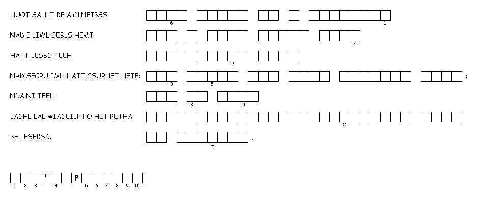

This week's lessons: Genesis 12:1-4a , Psalm 121 , Romans 4:1-5, 13-17 , John 3:1-17 or Matthew 17:1-9
This
week's lessons: Genesis
12:1-4a , Psalm
121 , Romans
4:1-5, 13-17 , John
3:1-17 or Matthew
17:1-9
Middle-School Pew-work
Becoming an adult is a journey into maturity, much like Abraham's journey to maturity of faith. If you could hear God calling you to that journey, what would God be saying?___________________________________
_______________________________________________________________________________________
_______________________________________________________________________________________
_______________________________________________________________________________________
_______________________________________________________________________________________
_______________________________________________________________________________________
_______________________________________________________________________________________
_______________________________________________________________________________________
Any time you journey toward something, you journey away from something else. What is God calling you to journey away from?_______________________________________________________________________
_______________________________________________________________________________________
_______________________________________________________________________________________
_______________________________________________________________________________________
_______________________________________________________________________________________
_______________________________________________________________________________________
_______________________________________________________________________________________
_______________________________________________________________________________________

Next
week's lessons: Exodus
17:1-7, Psalm
95, Romans
5:1-11, John
4:5-42